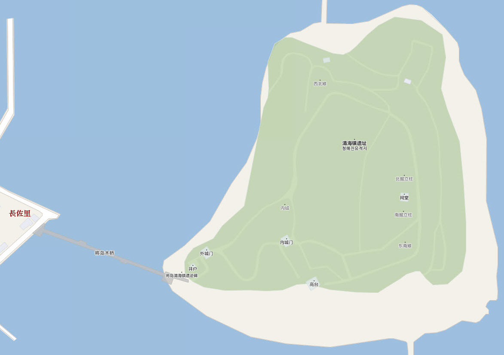

我們在長佐里的村莊下了車, 沿海邊的步道慢慢走, 穿過長長、橫躺海灣兩岸的將軍木橋, 便來到海中的長島(將軍島), 清海鎮遺址便建在這裡。接著我們會以順時針的方向把長島環繞一周, 也就是把整個清海鎮遺址環繞一周。清海鎮遺址的面積不是很大, 走走看看, 約一小時便可以遊覽完畢。
全羅南道．莞島 清海鎮遺址 (청해진유적지)
九世紀新羅時代, 韓國西南海岸一帶海盜猖獗, 新羅人經常被海盜擄去中國為奴, 出生於清海鎮的張保皋 (장보고), 精通武藝與航海, 在此處建立了清海鎮, 掃蕩了海盜, 掌握了海上統治權, 並保護了清海鎮這個海上重要貿易要塞, 因此清海鎮遺址具有非常重要的歷史意義。
清海鎮遺址位於長佐里海中的長島上, 長島又名將軍島, 與陸地相隔約180公尺, 是張保皋將軍最重要的根據地, 遺址保留了外城和外城。

從將軍木橋進入清海鎮遺址, 躍入眼中的第一個建築物是雄偉的外城門, 和金井山城的南門有些相似, 其實也是韓國古時城門的典型設計。

清海鎮遺址外城門前的入口處有一個井户 (우물), 也是清海鎮上唯一的一個水井。這樣的設計令我站在這裡懷疑了很久: 沒理由那麼重要的水井設在城門外, 豈不是敵人未攻城已經佔據了城內的水源? 我想: 張保皋的海上軍力肯定十分強大, 在海中已經摧毀所有敵人, 所以敵人根本無法靠近長島半步!
驟眼一看, 清海鎮城堡好像依島的地勢而建, 其實城堡的外圍和城內高出的地方, 都是用泥土築牆的一種獨特建造技術, 這些土牆古時稱為版築。
清海鎮遺址外城門旁展示了版築 (土牆)的基本結構 – 以石頭鋪平最底層, 然後填上泥土, 最後夯實泥土而成。不要少窺看似那麼簡單的技術, 可經歷數百年的考驗, 比很多現代的建築還要穩固。
穿過外城門, 沿陡斜的步道往上走便是清海鎮遺址的內城門, 外型結構和外城門頗相似的。
穿過內城門, 便進入了清海鎮遺址的內城。走上內城門上遠眺, 可看到張保皋紀念館、我們下車的地方、橫躺海灣兩岸的將軍木橋和腳下的清海鎮遺址外城門。
離開清海鎮遺址內城門, 沿內城中的步道向前走。
步道左邊圍繞清海鎮內城高出來的山坡其實是版築 (土牆), 可見當年工程的浩大。
繼續往上走。
來到清海鎮城北中央的地方, 從地勢來看, 是一個很好的監察地點, 現在當然是欣賞秀麗風光的好地方。
繼續沿清海鎮遺址．版築(土牆)的頂部走。
來到清海鎮城西北的地方 — 西北雉(서북치), 這裡可清楚看到西北面海上的情況。
在西北雉拐右, 沿清海鎮城北面版築的頂部走。
迎面有六根木柱 — 北掘立柱, 這裡是清海鎮遺址最高的地方, 所以估計是瞭望台的遺跡。望望地圖, 剛好走了一半的路程, 清海鎮遺址的面積比估計的細很多。